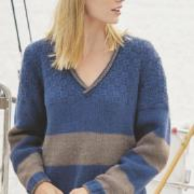
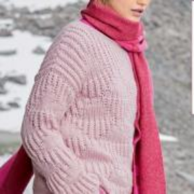
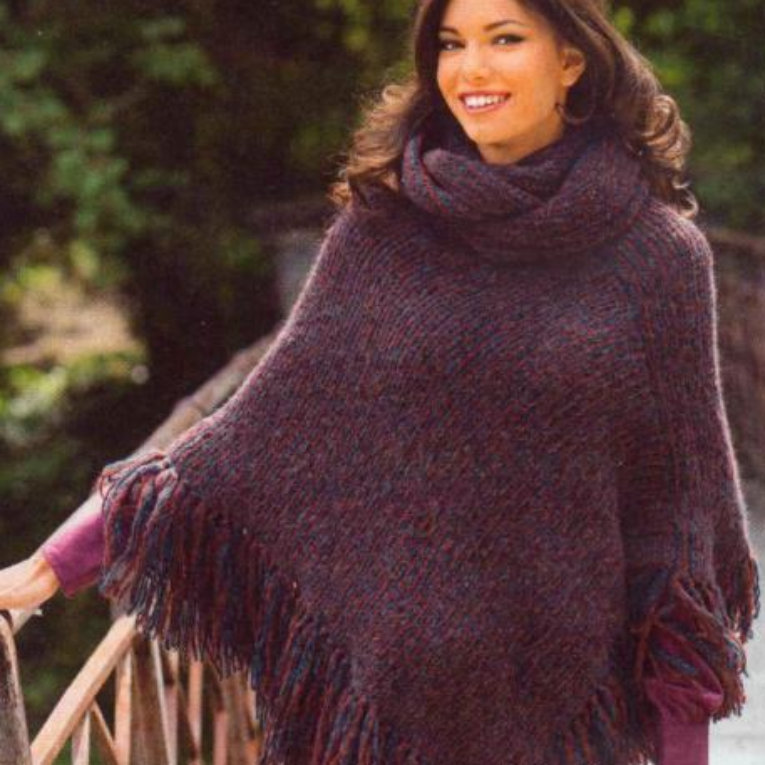
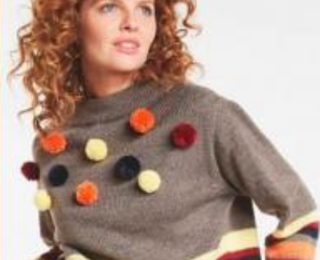

Длинный шарфик в полоску


Длинный шарфик в полоску

Нежный пуловер с ажурным узором

Разноцветный джемпер в широкую полоску

Нежно-розовый пуловер

Фиолетовое пончо и воротник-хомут спицами
Сетчатый пуловер с рукавом реглан
Берет с металлизированной нитью спицами

Широкий укороченный пуловер в полоску спицами

Свитер с цветной вышивкой спицами

Шарф с узорами из цветных квадратов крючком

Туника с широкими ажурными рукавами крючком

Пелелина с узором из цветов с бахромой крючком

Нежно-розовый пуловер

Укороченный худи с широкими рукавами и снуд спицами

Свитер с цветной вышивкой спицами

Пуловер с сочетанием узоров из шишечек спицами

Нежный пуловер с ажурным узором